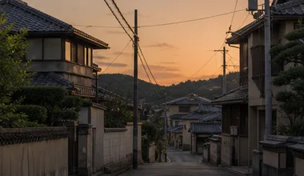
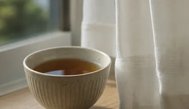
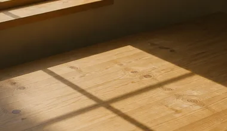
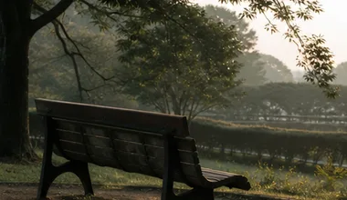

母を送ったあと、はじめて自分の時間に戸惑った
七年の在宅介護が終わった日から、朝起きても呼ぶ声がしない。ほっとした自分に驚いて、しばらく罪悪感が抜けなかった。つどいで同じ話を聞いて、それはずるいことじゃないと思えるようになった。
Let your hands rest a while.
Since 2021
かさねて
言いそびれてきたことを、
そのままの順番で
話していく時間です。
ひとりで抱えている時間を、
すこし手放す場所
だれにも言えなかった一日のことも、
うまく言葉にならない気持ちも、
そのまま持ってきてください。
Voices of
Family Carers
ここに並んでいるのは、
つどいで話された
ことばの一部です。
まとまらないまま、
そのままの形で
置いています。
七年の在宅介護が終わった日から、朝起きても呼ぶ声がしない。ほっとした自分に驚いて、しばらく罪悪感が抜けなかった。つどいで同じ話を聞いて、それはずるいことじゃないと思えるようになった。

中学のころから母の身のまわりを手伝ってきた。友だちに話しても伝わらない気がして、ずっと黙っていた。同世代の人が同じ暮らしをしていたと知って、はじめて自分の十年に名前がついた。

妻の介護を五年。近所づきあいも減り、一日中だれとも話さない日が続いた。オンラインなら顔を出さずに参加できると聞いて、台所からつないだのが最初だった。今は聞き役にまわることが多い。
迷惑をかけたくなくて休みの理由をぼかしていた。制度の名前を知って上司に話したら、思ったより静かに受けとめられた。言わなかった三年ぶんの気の張りが、その日にほどけた。
窓口を回るたびに手続きの話ばかりで、しんどさを言う場所がなかった。つどいでは結論を出さなくていい。ただ順番に話して、順番に聞く。その時間があるだけで、翌週の電話がかけられる。
介護と家事で一日が終わり、気づけば十年が過ぎていた。つどいで聞いた「自分の時間を先に予約する」を真似して、夕方の三十分をお茶の時間にした。小さいけれど、確かに戻ってきた時間だ。
実家まで片道三時間。金曜の夜に発って日曜に戻る生活を二年続けた。抱えきれないと言えたのは、同じ距離を通っている人の話を聞いてからだった。今は月に一度、頼る先を決めている。

何度も同じことを聞かれ、つい強い言い方をしてしまう自分が嫌だった。つどいで「疲れているときは離れていい」と言われ、週に一度だけ夕方を空けた。それだけで、声の出し方が変わった。
障害のある妹の予定は全部わたしの手帳にあった。結婚を考えたとき、はじめてそれを重いと感じた自分を責めた。同じ立場の人と話して、抱える量は分け直していいのだと知った。

夫を送って三年。空いた時間の使い方がわからず、つどいの見学に来た。話を聞くだけのつもりが、いつのまにか新しく来た人の隣に座るようになった。あの日々に意味があったと、今は思える。
進学も就職も、通える距離かどうかで選んできた。それを話したら「よく続けたね」と言われて、はじめて泣いた。今は自分の予定から先に書く練習をしている。まだうまくはない。
きょうだいに頼むのは気が引けるし、外の手を借りるのは母がいやがる。そう決めつけて全部ひとりで回していた。同じ思い込みの話を三人から聞いて、翌月にはじめて短期の預かりを使った。
※お名前はすべてニックネームです。
※内容はおひとりずつの経験で、介護の事情は家庭ごとに違います。同じやり方がどなたにもあてはまるわけではありません。要介護認定や制度の手続きについては、お住まいの地域包括支援センターや市区町村の窓口へおたずねください。
Event & Report
終了しました
開催日2026年7月12日（日）
終了しました
開催日2026年6月14日（日）
終了しました
開催日2026年5月17日（日）
終了しました
開催日2026年3月8日（日）
つどいの予定と日々の記録
About us
かさねて
介護を担う人が、自分の時間を手放さずに暮らせる地域をつくる
①ケアラーが孤立しない場を、毎月ひらき続ける
②ケアラーの声を集めて、地域の支援のかたちに届ける
話せる相手がひとりいるだけで、
介護の一日はすこし変わります。
芹沢 みのり
せりざわ・みのり
かさねて代表
父が倒れたのは、わたしが35歳のときでした。仕事を続けながらの在宅介護は、九年つづきました。
毎日のようにやることは増えるのに、だれかに話すのは後回しになりました。心配をかけたくない、うまく説明できない、そもそも話す時間がない。気づけば、家と職場のあいだを往復するだけの日々でした。
限界だと思ったとき、市の窓口で紹介されたのが、介護をしている人が集まる小さな会でした。制度の説明ではなく、ただ話を聞いてもらった一時間で、翌週の見通しが立ったのを覚えています。
そういう場が、もっと近くにあればいい。そう思って声をかけたところ、同じことを考えていた三人と出会い、会をはじめることになりました。
五年のあいだに、たくさんの方が来ては、また来なくなり、しばらくして戻ってこられます。それでいいと思っています。必要なときだけ寄れる場所であることが、この会のかたちです。
ひとりで抱えているとかたくなるものも、だれかと分ければすこしゆるみます。その三十分のために、毎月ひらいています。